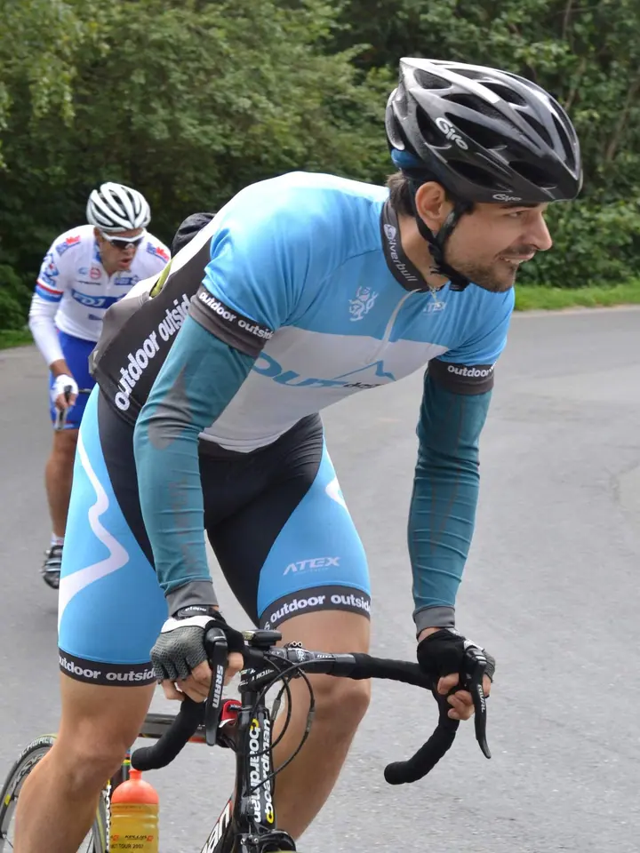
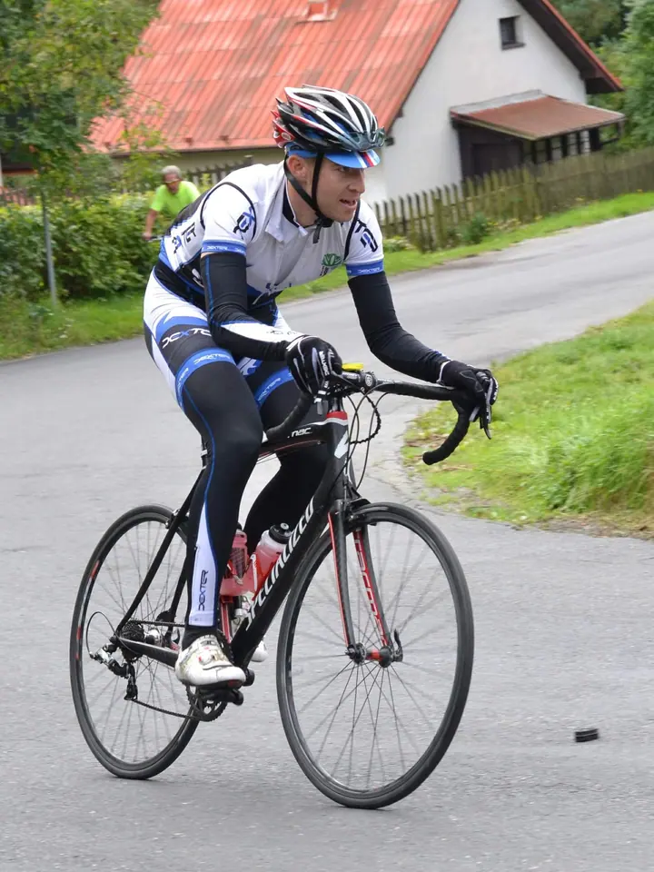
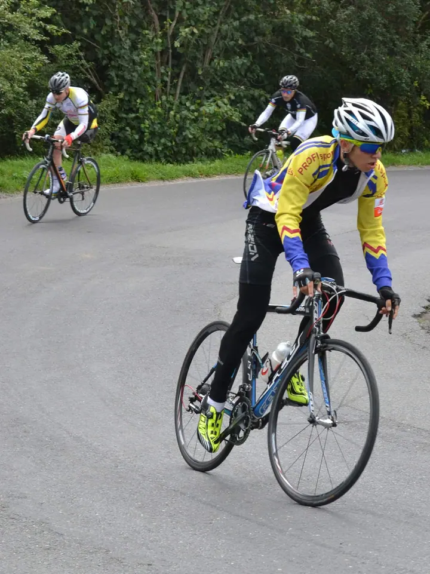
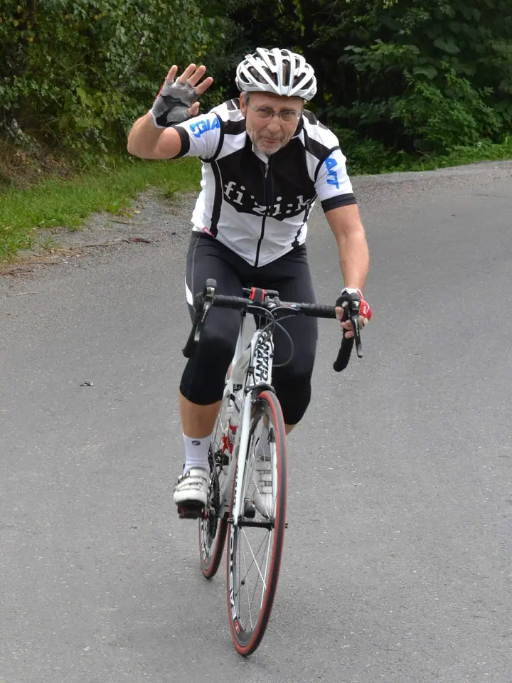
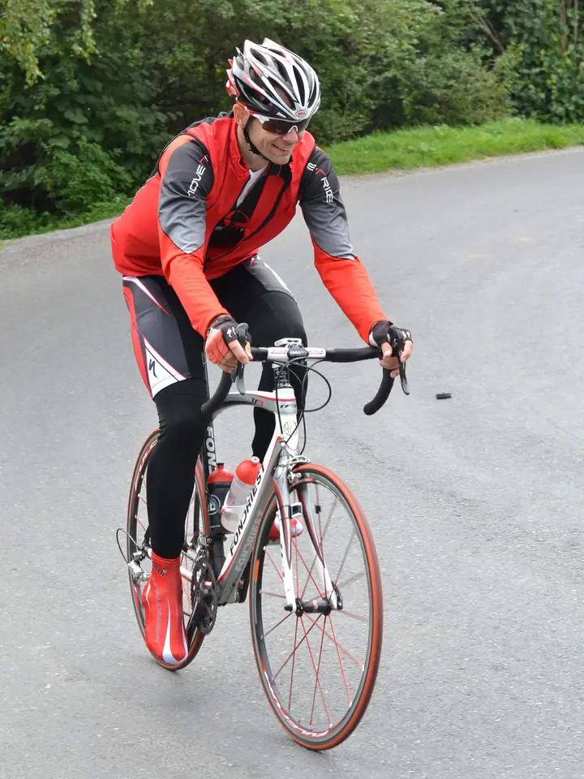
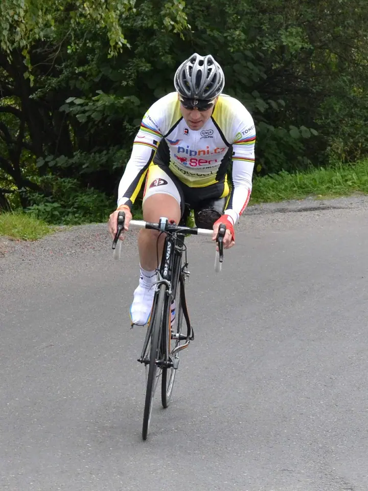
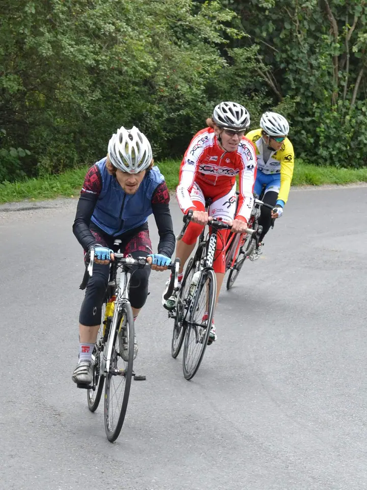
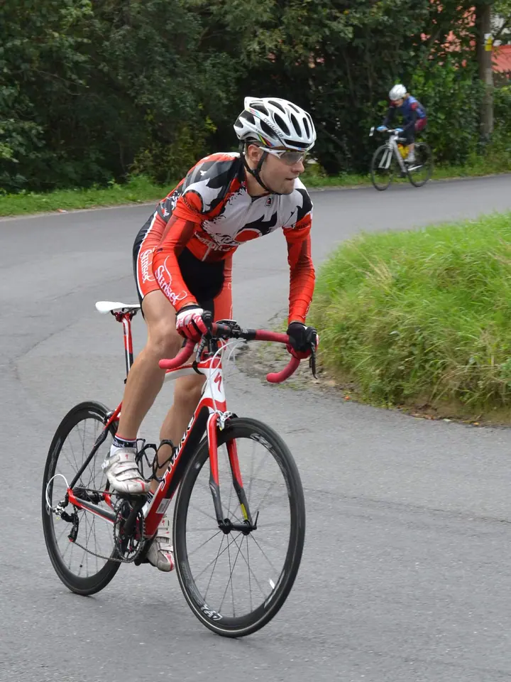
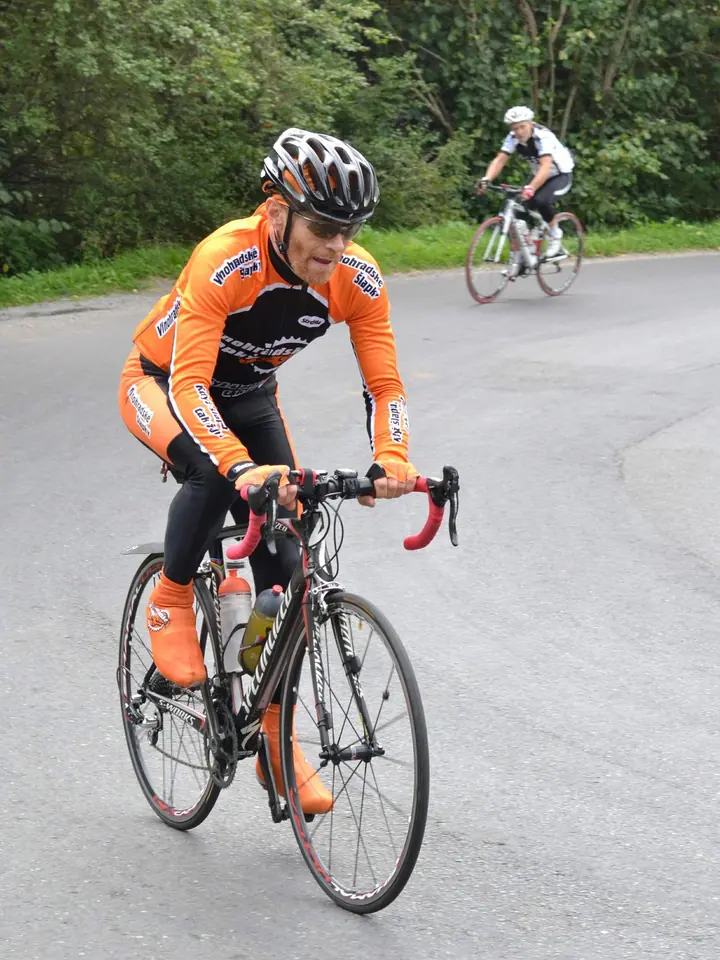

01 / 03
Fotky z cyklistických závodů
Fotím silniční závody přímo u trati. Fotky ze závodu najdete v mé galerii.
Zeptat se na termín→








Cyklistické závody z kraje silnice
Zeptat se na termín →(01) Ahoj
Jmenuji se Klára Skopečková a fotím silniční cyklistické závody. Stojím u trati a snažím se vyfotit každého, kdo kolem mě projede. Svou fotku si pak můžete vzít v tiskovém rozlišení nebo vytištěnou.
(02) Co fotím
01 / 03
Fotím silniční závody přímo u trati. Fotky ze závodu najdete v mé galerii.
Zeptat se na termín→(04) Postup
Od první zprávy po hotovou galerii.
Krok 1 z 4
Stojím u trati a fotím jezdce, kteří kolem mě projedou.
Krok 2 z 4
Fotky ze závodu zveřejním v galerii, kde se můžete v klidu najít.
Krok 3 z 4
Pošlete mi e-mail s fotkami, které chcete, a napište, jestli chcete soubor, nebo tisk.
Krok 4 z 4
Pošlu vám fotku v tiskovém rozlišení 300 dpi, nebo ji po domluvě vytisknu.
Každý kilometr si zaslouží svou fotku.
(05) Za objektivem
Fotím silniční cyklistické závody. Stojím u silnice, obvykle v zatáčce nebo v kopci, a snažím se vyfotit každého jezdce, který kolem mě projede. Z jednoho závodu tak vznikne dlouhá řada fotek v dresech všech barev.
Fotky zveřejňuji v galerii na Rajčeti, kde jich je dnes přes 570. Každou z nich můžete získat v tiskovém rozlišení 300 dpi, nebo vám ji po domluvě rovnou vytisknu. Stačí mi napsat e-mail.
Klára
Klára Skopečková · Fotografka cyklistických závodů
Najděte se v galerii a napište mi na ks-cyklofoto@seznam.cz, o kterou fotku máte zájem.
Všechny fotografie vám můžu poslat v tiskovém rozlišení 300 dpi.
Ano, po domluvě vám fotku rovnou vytisknu.
Napište mi, o kterou fotku máte zájem a v jaké podobě ji chcete. Podrobnosti vám pošlu e-mailem.
(07) Kontakt
Napište pár vět o tom, co si představujete, a termín, který se vám hodí.
ks-cyklofoto@seznam.cz